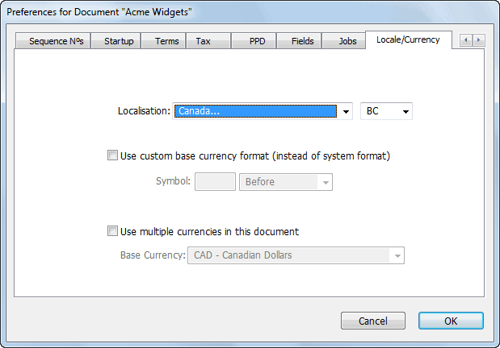
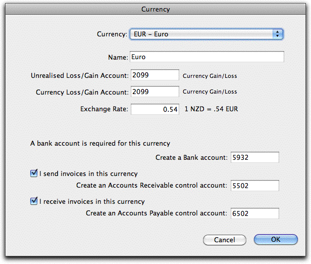
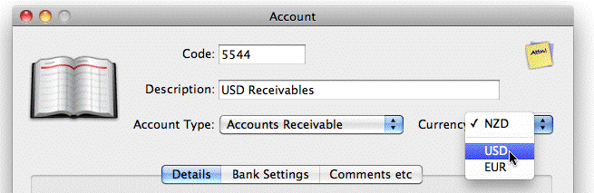
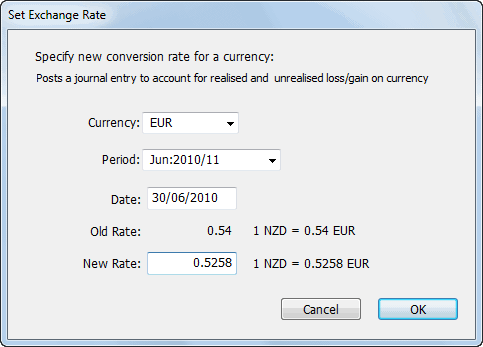
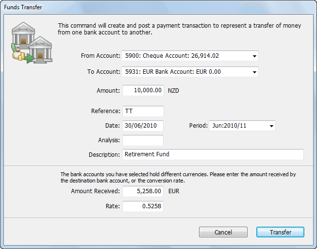
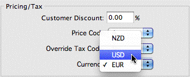

You can automatically generate purchase orders for products whose effective stock is less than the products’ re-order level(s). This can be done either by selecting a range of products, or by selecting a range of Sales Orders.
or: in the Sales Order list highlight the Sales Orders for which you want to reorder stock
Purchase orders will be generated for the products or sales orders highlighted. The following applies:
Purchase orders are only generated for bought products.
Purchase orders are generated for the supplier in the “Usual Supplier” field. If no supplier is specified, no order is created.
The effective stock holding of a product is the Stock on Hand from the product record (this will be zero for non-stocked items), plus any existing unfulfilled purchase orders, less any unfulfilled orders. An order is only created if the effective stock holding is less than the re-order point.
The number re-ordered is the greater of 1) the difference between the effective stock holding and the re-order point and 2) the re-order quantity.
You will get an order (equal to the re-order quantity) for any non-stocked items that you have highlighted, provided the reorder quantity greater than zero.
Where you generate one or more purchase orders from a single, highlighted sales order, the purchase orders are linked (related) back to the originating sales orders, and can be located using the Find Related command. Linking is not possible when more than one sales order is highlighted.
There are several ways for you to determine what is on backorder:
Double click a sales/purchase order and review the BackOrder column;
The Product and Customer/Supplier Enquiries are useful for ad hoc enquiries on particular products, customers or suppliers;
The Stock Enquiry will show the stock status (including on-order and backorders) for a specified product;
The Backorder Summary reports (in the Reports menu) can be done for all backordered products, or for selected product or customers. These reports can also show the effect of any unposted invoices;
The Committed Stock report will show the current effective stock based on outstanding sales and purchase orders (and optionally unposted invoices).
Remote Warehousing is MoneyWorks Service that enables warehousing data to be submitted from the MoneyWorks Go app for iPhone/iPad (or other compliant third party systems). This gives you hand-held scanners to facilitate order fulfilment and warehouse management. It provides the following following functions:
Inwards Goods: Receipting of inwards goods into a location, and the automatic updating of the original PO in MoneyWorks with the receipted quantities (and and serial/batch numbers);
Outwards Goods: Picking of a released sales order. When a MoneyWorks sales order is released, it can be retrieved by a device and the picked quantities (with any serial/batch numbers) entered. When picking is complete the picked data is sent back to MoneyWorks and the sales order automatically updated.
Stock Transfers: Transferring of stock between locations;
Stock Requisitions: Requisitioning an item for a nominated job. The item is removed from stock and entered into the
MoneyWorksGo Remote Warehouse
MoneyWorks job system ready for invoicing.
Stocktake: Stocktake information is uploaded to the device and the stock counts can be scanned or entered. Upon completion the stocktake counts (including serial/batch numbers) are uploaded to MoneyWorks.
When goods arrive at the warehouse, the PO number is entered on the device. The items and quantities received are then entered, either by scanning or keying in the product code (or using the find facility on the device), along with any serial/batches.
Upon completion, the receipted data is uploaded to MoneyWorks, and the PO will turn green, indicating that the goods have been receipted in the warehouse. Opening the PO will offer to update the received quantities with those submitted from the warehouse.
Stock Transfers and Requisitions
Stock transfers initiated from a device will appear automatically in MoneyWorks as posted stock transfer journals, and stock requisitions as a pending Job Sheet Item. No further action is required.
Stocktake
The Remote Stocktake toolbar button in the Items list window (which is only visible if the user has stocktake privileges) is used to manage remote stocktakes.
There are two types of stocktake that can be undertaken from a remote device:
Full Stocktake: Where a stocktake is started in MoneyWorks, the count can be done on the device by tapping the Start Stocktake button. The submitted item count will be processed into the Counted field of the stocktake when actioned in the Remote Stocktake Management window.
Quick Stocktake: This allows a stocktake of selected items only. The items are selected in the Remote Stocktake toolbar button, but the item count will be submitted as a stock transfer journal.
When the Remote Stocktake toolbar button is clicked the Remote Stocktake Window is displayed. Apart from the Stock Adjustment account (a required general ledger account for items being created or written off), the window is divided into two parts, depending on the type of stocktake being performed:
Note that whatever is entered as receipted goods into the device will be submitted (and additional lines will be added to the PO if the receipted items weren't on the order).
To facilitate the receipting, it would probably be useful to have a printout of the original order available. If the product codes on this are also displayed as barcodes, they can be easily scanned.
For shipping, the MoneyWorks sales order must first be released by setting the Warehouse Status to "Released". Released orders will appear on the the device's screen where they can be fulfilled (once it appears on one device, its status changes to "In Warehouse" to minimise the risk of other devices also
receiving the order).
All lines from the order are shown on the device, and the quantities picked (plus any required serial/batch numbers) are entered. Once all available items are picked, the details are sent back to MoneyWorks (at this point the colour of the sales order will change to Orange if part picked, and Green if fully picked—in the latter case the status changes to "Done").
When the order is opened in MoneyWorks, a prompt is given as shown above to update the ship quantities with the data sent from the device.
Note: Emailed stocktake data should only be used if the normal submission process from a device is not available for some reason (or if it is provided from a third party).
Remote Fulfilment Data Requirements
For more information on data formats and protocols (including REST API calls), see Remote Fulfilment Data Requirements
For a full stocktake, you can process submitted item counts for a specified location, or all locations, using the Update button. This takes the submitted date and updates the Counted field in the normal MoneyWorks stocktake list. If the counted data has been emailed (which is one of the options in the remote warehousing stocktake), it can be imported using the Import button..
For a quick stocktake, you need to identify the items to be included in the stocktake. This is done by highlighting the items in the list before you open the Remote StockTake Management window, and the highlighted items can be included in the quick stocktake by clicking the Mark button (the items will be added to any already marked for the stocktake). The Show button will display the marked items, and the Clear button will clear any that are marked (it will not clear it of any devices that have started a quick stocktake). If the counted data has been emailed (which is one of the options in the remote warehousing stocktake), it can be imported using the Import button.
The remote warehousing allows the emailing of stocktake data which can be imported via the Remote Stocktake Management window. This is intended as a backup regime for long stock takes which might take several days, and if the device is lost/broken in the meantime it would be problematic for stocktake integrity. However there is no reason that stocktake data prepared from other sources (such as a spreadheet) cannot be imported in this manner provided it is in the correct format.
1 The Process Order pop-up replaces the checkbox used in MoneyWorks 5 and earlier.↩︎
2 The accumulated deposits paid on an order are held in the OrderDeposit field↩︎
3 The Process Order pop-up replaces the checkbox used in MoneyWorks 5 and earlier.↩︎
4 The Process Order pop-up replaces the “grinder” used in MoneyWorks 5 and earlier.↩︎
5 Prior to MoneyWorks 6.1, items were always brought into stock at the value specified on the purchase order. This could lead to changes in the average unit value, meaning that the unbilled inventory account would never be cleared.↩︎
6 This will happen only if the Document preference Sales Order Ship Qty Updating is set↩︎
The Multi-currency feature of MoneyWorks Gold allows for purchasing and sales to be made and tracked in more than one currency, and for bank accounts and accounts receivable/payable to be held in a currency other than the local one.
The steps for setting up multi-currency are simple:
Enable multi-currency (it is off by default);
Specify the new currency to use;
Create the general ledger control accounts needed for the currency);
Create any customers or suppliers that you deal to in the new currency;
Multi-currency is turned off by default and needs to be enabled.
The Document Preferences window will open

Click on the Locale/Currency tab
Turn on the Use multiple currencies in this document option
Select your base currency (i.e. your local currency) from the menu.
Click OK
Note: Once you have created a currency, you will not be able to turn off the Use multiple currencies option.
To create a new currency:
The currencies list window will open. Any existing currencies you have specified (apart form your local currency) will be displayed.
The Currency window will open

This lists all ISO currencies, plus (at the end of the menu) you can make your own. Note that you cannot specify the same currency twice.
This will normally be an expense account. See Unrealised Gains and Losses
for a discussion of these.
See Setting the Exchange Rate for more information on exchange rates.
MoneyWorks will need to create a bank account for the currency, even if you don’t have a real one. This is to facilitate payment/receipts against invoices.
MoneyWorks has suggested a new bank account code for you. You can change this if you wish. Note that the OK button will be disabled if you attempt to change it to an existing general ledger code.
If this option is on, you will need an Accounts Receivable control account for the currency. You can use the code suggested, or alter it if you prefer.
If this option is on, you will need an Accounts Payable control account for the currency. You can use the code suggested, or alter it if you prefer.
Click the OK button to save the currency details
It may be that when you set up the currency you didn’t realise that you would later need to send (or receive) invoices in the currency, so you didn’t set up one of the control accounts.
Alternatively you may have more than one bank account in this currency, or want more than one control account for your debtors and/or creditors.
To create a control account later:
The Accounts list will be displayed
The Account entry screen is displayed
Set the Currency pop-up to the desired currency (which must have already been created)

Note: Once you save the new account (by clicking OK or Next) you will not be able to alter the currency, so you need to get it right. If you make a mistake, you will need to delete the account and recreate it.
If you set up a currency by mistake, you can delete it provided no transactions have been entered against it. To delete the currency you need to first delete any control accounts (such as the bank account) that were created with the currency. You do this in the Accounts list —see Deleting an Account. Having done this, you can delete the currency from the Currency list.
One of the problems with currencies is that their relative value changes all the time. Thus the 10,000 Nakfa stashed into your Eritrean bank account which were worth $1,100, suddenly become worth just $1,020.
MoneyWorks handles this by allowing you to change the system exchange rate at any time (and also to specify a transaction rate for individual transactions if you need to). A separate currency rate is held for each currency for each period.
To set the currency rate
The Currency Rate window will open

Specify the date for which you want the rate to apply (this will automatically set the period)
You can change the rate for any open (unlocked) period, but you should be circumspect about changing prior periods as it will generate currency gains/ losses, which will affect your P&L.
Exchange rates are always expressed in terms of how many units of the foreign currency will be purchased by one unit of the local currency.
At this point a journal will be created to reflect the gain or loss that has occurred because of the rate change. Generally the change in value of the balance due on unpaid invoices in the currency will be posted to the Unrealised Gain/Loss account, and that of any bank accounts will be posted to the Realised Currency Gain/Loss account.
Note: If you are changing the rate in a prior period, two journals will be created: the first is to journal in the currency gain/loss in the period of the change; the second is to reverse this out in the subsequent period. If you wonder why this is necessary, have a think about what would happen if we have entered the same rate for Jan and Feb, and then change the rate in Jan.
Tip: Use the exchange rate report to view historic rates (or customise the currency list to see them on screen).
To record a transfer of funds from one bank account to another that is in a different currency, you use the Transfer Funds command.

The Funds Transfer window will be displayed
Use the To Account pop-up menu to choose the account into which the funds will be deposited
If the currencies of the selected bank accounts are different, the window will extend to allow you to specify the amount received in the destination bank, or the exchange rate.
In the Amount field, specify the amount being transferred out of the From Account
Specify a reference number (if any), the date and a description for the transaction
In the Amount Received field specify the amount received in the currency of the receiving bank account
The Rate will alter to show the effective rate
Alternatively if you know the rate, specify this in the Rate field, and the Amount Received will alter
A cash payment will be created and posted out of the From Account, into the To Account.
Note: If the amount received is different from that expected (as determined by the system exchange rate for the period), an adjustment is made to the currency gain/loss accounts.
When you enter an invoice, it is deemed to be in the currency of the customer
/supplier. Therefore if you want to send an invoice in a non-local currency, you need to set up the supplier to be in that currency.
Note: Once set, the currency for a debtor/creditor cannot be altered
To create a debtor/creditor in a different currency:
Create the Name record in the usual manner —see Creating a New Name

Note: If the customer/supplier is offshore, there will probably be no GST/VAT/ Sales Tax. If so, set the Override Tax Code to an appropriate tax code.
Once a customer or a supplier is assigned a currency, all transactions entered for them will be in that currency.
Note: You will only be able to use the head office billing facility if both the head office and the branch have the same currency.